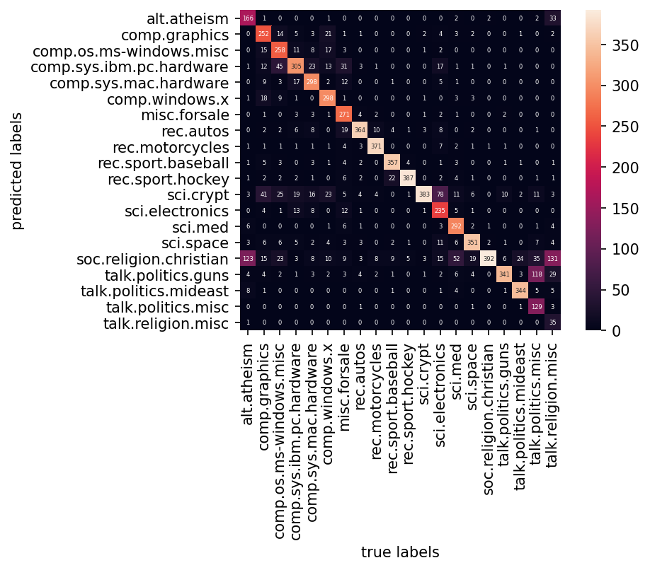

Naive Bayes¶
Naive Bayes is a common traditional machine learning algorithm for classification task.
Important assumptions behind Naive Bayes:
Features are independent of each other
Features have equal contributions to the prediction
When applying Naive Bayes to text data, we need to convert text data into numeric features.
bag-of-words model
vectorization issues
Fine tune the vectorizing features for better representation of the texts
Applications
Text Classification
Issues
Fail to consider the sequential orders of words in texts
Loading Libraries¶
import numpy as np
import pandas as pd
import seaborn as sns
import matplotlib.pyplot as plt
from sklearn.datasets import fetch_20newsgroups
from sklearn.feature_extraction.text import TfidfVectorizer
from sklearn.naive_bayes import MultinomialNB
from sklearn.pipeline import make_pipeline
from sklearn.metrics import confusion_matrix, accuracy_score
Fetech Data¶
data = fetch_20newsgroups()
Downloading 20news dataset. This may take a few minutes.
Downloading dataset from https://ndownloader.figshare.com/files/5975967 (14 MB)
print(type(data))
print(len(data.filenames)) # doc num
<class 'sklearn.utils.Bunch'>
11314
text_categories = data.target_names
print(len(text_categories)) # total number of text categories
20
Train-Test Split¶
train_data = fetch_20newsgroups(subset="train", categories = text_categories)
test_data = fetch_20newsgroups(subset="test", categories = text_categories)
print("There are {} unique classes (text categories)".format(len(text_categories)))
print("Training Sample Size: {}".format(len(train_data.data)))
print("Test Sample Size: {}".format(len(test_data.data)))
There are 20 unique classes (text categories)
Training Sample Size: 11314
Test Sample Size: 7532
Data Inspection¶
print(train_data.data[5][:200])
From: dfo@vttoulu.tko.vtt.fi (Foxvog Douglas)
Subject: Re: Rewording the Second Amendment (ideas)
Organization: VTT
Lines: 58
In article <1r1eu1$4t@transfer.stratus.com> cdt@sw.stratus.com (C. D. Tav
Building Pipeline¶
The modeling pipeline should include:
text transformation (vectorization)
naive bayes modeling
# Build model pipeline
model = make_pipeline(TfidfVectorizer(), MultinomialNB())
# Train the model using training data
model.fit(train_data.data, train_data.target)
# Predict the classes of test data
predicted_categories = model.predict(test_data.data)
Evaluation¶
Note
By default, the confusion matrix indicate the correct labels on the rows and predicted labels on the columns.
accuracy_score(test_data.target, predicted_categories)
0.7738980350504514
mat = confusion_matrix(test_data.target, predicted_categories)
import matplotlib
matplotlib.rcParams['figure.dpi']= 150
sns.heatmap(mat.T, square=True, annot=True, fmt="d",
xticklabels=test_data.target_names,
yticklabels=test_data.target_names,
annot_kws={"size":4})
plt.xlabel("true labels")
plt.ylabel("predicted labels")
plt.show()
